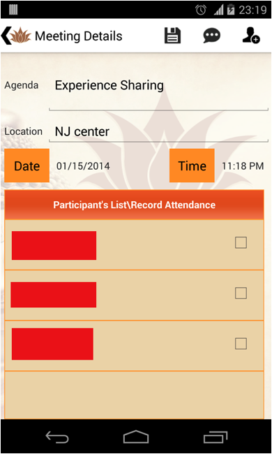

Desde la página principal, haga clic en el icono "Orientación"
2.1.1 Desde la página principal, haga clic en el icono "Metas"

2.1.2 Presione el icono (+)

2.1.3 Se mostrará la pantalla Añadir. Introduzca los detalles y haga clic en Aceptar

2.2.1 Haga clic en el icono de "Metas" desde la página de inicio, se desplegará una pantalla con las metas existentes

2.2.2 Seleccione la meta (Checkbox) y haga clic en el icono de edición dispuesto en la parte inferior de la pantalla

2.2.3 Edite los detalles y haga clic en OK
2.3.1 Haga clic en el icono de "Metas" desde la página de inicio, se desplegará una pantalla con las metas existentes

2.3.2 Seleccione la meta (Checkbox) y haga clic en el icono des la opción deseada dispuesta en la parte inferior de la pantalla

Existen dos maneras de llevar a cabo esta acción, a continuación serán explicadas
2.4.1 Pantalla de Metas


2.4.2 Pantalla de Cantos


Haga clic en el botón de "Iniciar" para comenzar el canto
Haga clic en el botón "Parar" para detener el canto
Si es seleccionado el tiempo, el dispositivo vibrará al llegar al tiempo selecionado
Haga clic en "Establecer audio" para cantar con un Gongyo o Daimoku pregrabado
4.1.1 Haga clic en el icono de "Reuniones" desde la página de inicio, y pulse (+) en el menú superior

4.1.2 Agenda, Ubicación, Fecha y Hora pueden ser modificados agregados en esta sección

4.1.3 Invite a otro amigo(s) con el icono Agregar
Seleccione los participantes y presione OK
Presione Guardar para crear la Reunión

Haga clic en el icono de "Reuniones" desde la página de inicio
Seleccione la reunión que desea actualizar, realice los cambios pertinentes y presiones en Guardar
Haga clic en el icono de "Reuniones" desde la página de inicio
Seleccione la reunión que desea actualizar, haga clic en el icono de SMS
Haga clic en el icono de "Reuniones" desde la página de inicio
Seleccione la reunión, haga clic en el nombre del invitado para marcar su asistencia
Haga clic en el icono de "Reuniones" desde la página de inicio, seleccione la reunión y presione el icono de Email
Seleccione el país que desea consultar, se abrirá una pantalla de Google Maps

En las Configuraciones usted podrá agregar su nombre de usuario y contraseña para acceder a publicar en Facebook y Twitter
Presione la casilla para ingresar en Facebook o Twitter
Publicar estado cuando comience a entonar, publica un estado en Facebook o Twitter cada vez que comienza a entonar
Publicar estado cuando cumpla mis metas, publica un estado en Facebook o Twitter cada vez que cumpla una meta